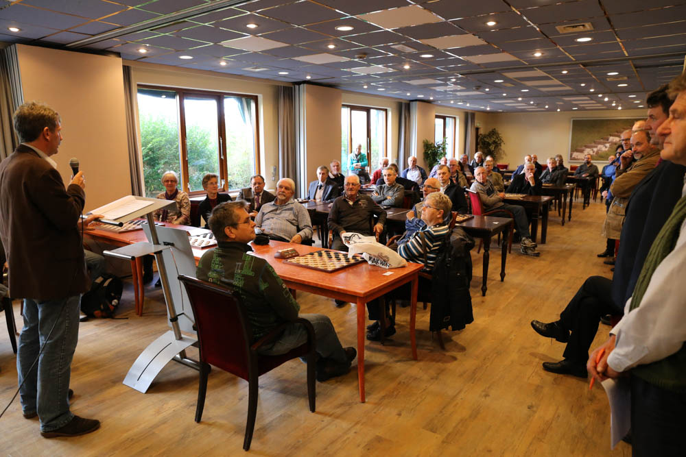

")
Programma
Programma
Zondag 3 november aankomst
- 15 uur openings- ceremonie en sneldamtoernooi
Maandag 4 november
- 10 uur eerste ronde
- 18 uur tweede ronde
Dinsdag 5 november
- 10 uur derde ronde
Woensdag 6 november
- 10 uur vierde ronde
- 18 uur vijfde ronde
Donderdag 7 november
- 10 uur zesde ronde
Vrijdag 8 november
- 10 uur zevende ronde
- 18 uur achtste ronde
Zaterdag 9 november
- 10 uur negende ronde
- 15 uur slotceremonie en prijsuitreiking
Zondag 10 november vertrek
EK veteranen, jeugd en studenten tot 26 jaar
De KNDB organiseert in samenwerking met Vakantiepark De Krim en Damclub Oosterend op Texel het EK voor veteranen, jeugd en en studenten tot 26 jaar. De toernooien worden gehouden van zondag 3 tot en met zaterdag 9 november 2013 op het Vakantiepark De Krim te De Cocksdorp.
Er wordt gespeeld volgens het Zwitsers systeem met een speeltempo van 80 minuten plus 1 minuut per zet (Fischer-systeem). Aan het toernooi voor veteranen mogen spelers deelnemen die de leeftijd van 50 jaar hebben bereikt.
Aan het toernooi voor jongeren en studenten mogen spelers deelnemen in de leeftijd tot 26 jaar, waarbij jongeren en studenten, mannen en vrouwen een apart toernooi spelen. Studenten dienen bij een onderwijsinstelling te zijn ingeschreven.
Verblijfskosten:
- In een chalet bij een bezetting van 4 personen: € 24,50 p.p.p.n.
- Bij een bezetting van 2 personen: € 39,50 p.p.p.n.
- In hotel Molenbos bij een bezetting van 2 personen op een kamer: € 42,00 p.p.p.n.
- Bij een bezetting van 1 persoon op een kamer: € 47,00 p.p.p.n.
- De prijzen zijn inclusief BTW, toeristenbelasting en lakenpakket.
De kosten voor eten bedragen € 27,50 p.p.p.d. voor ontbijt, lunch en diner (excl. drankjes).
Het inschrijfgeld bedraagt € 40 voor veteranen en € 20 euro voor junioren en studenten. Voor het sneldammen € 10.
Opgave uiterlijk 1 oktober 2013 bij het bondsbureau van de KNDB: Postbus 326, 3900 AH Veenendaal of per e-mail: bondsbureau@kndb.nl. Bij de aanmelding opgeven op welke wijze u wilt overnachten.
Een lijst van deelnemers vindt u hier.
Foto van de opening op zondag 3 november:
